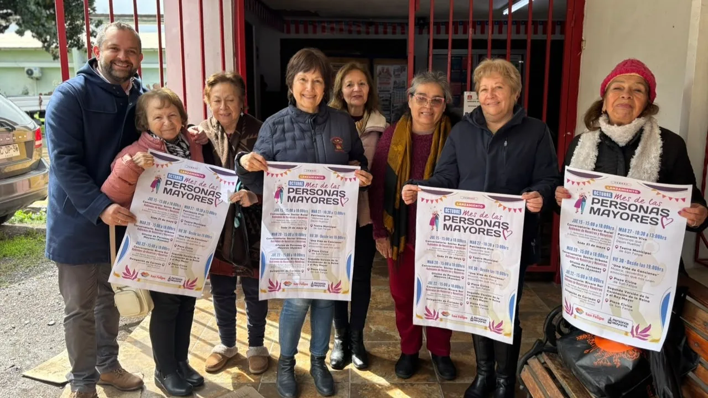
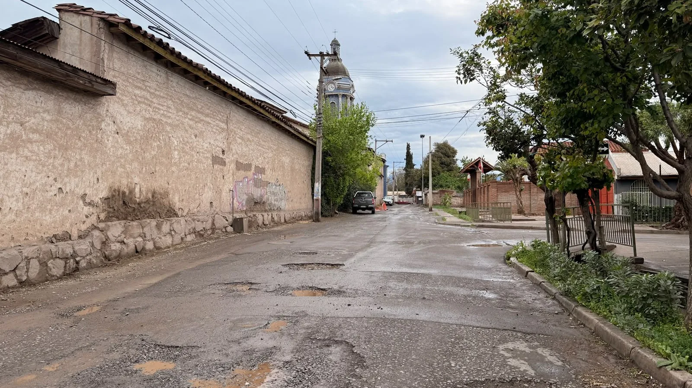
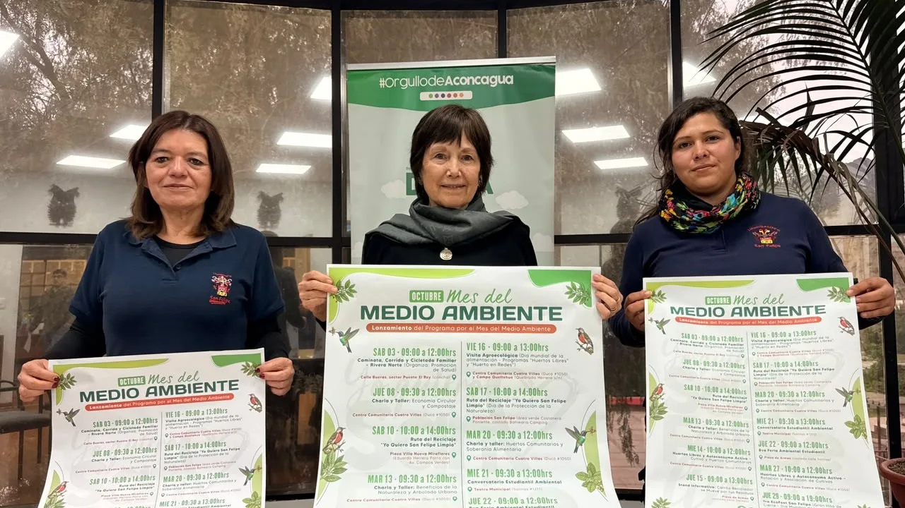

08/10/2026
Sobre nuestra municipalidad
- AlcaldesaCarmen Castillo Taucher
- DirecciónCalle Salinas 1211, San Felipe
- Teléfono342 50 90 00
- Correogabinete@munisanfelipe.cl
Bienvenidos
Un espacio para informarte, participar y encontrar servicios de interés comunal.
Explorar el portalAcceso rápido
Accesos directos a documentos, registros y recursos oficiales del municipio.
Mantente informado

08/10/2026

08/10/2026

08/10/2026
Directorio municipal
Canales oficiales de atención de la Municipalidad de San Felipe y sus principales dependencias.